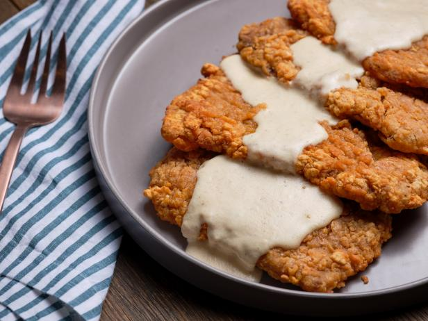

Chicken Fried Steak with Gravy

Description
This Chicken Fried Steak is delicious with the best southern-style
gravy on top. It is husband's favorite dish!
Ingredients
Chicken Fried Steak
- 4 cube steaks (~6 ounces each)
- 1 1/2 cups all purpose flour
- 2 tsp fresh ground black pepper
- 2 tsp of kosher salt
- 1/2 tsp smoked paprika
- 1/2 tsp onion powder
- 1/2 tsp garlic powder
- 1/2 tsp baking powder
- 1 1/2 cups buttermilk
- 2 tsps hot sauce
- 2 eggs
- 1 cup vegtable oil
Chicken Fried Steak Southern Gravy
- 4 tbsp grease
- 4 tbsp flour
- 2 to 3 cups whole milk
- 1/2 cup heavy whipping cream
- salt and pepper to taste
Instructions
Chicken Fried Steak
- In a shallow bowl, whisk together flour,
one teaspoon black pepper, one teaspoon salt, paprika,
onion powder, garlic powder, baking soda, and baking powder.
Set aside.
- In a separate shallow bowl, whisk together buttermilk,
hot sauce, and eggs. Set aside.
- Pat cube steaks dry with a paper towel,
removing as much moisture as possible. Season with
one teaspoon of salt and one teaspoon of pepper.
Let sit for 5 minutes and pat dry again with paper towel.
- Dredge the cube steaks in the flour mixture,
shaking off excess, then dredge in the buttermilk-egg mixture,
letting excess drip off, and then once again in the flour mixture,
shaking off excess.
- Place breaded cube steaks on a sheet pan or metal rack
and press any of the remaining flour mixture into the cube
steaks making sure that the entire steak is completely coated.
Let sit for 10 minutes.
- Preheat oven to 225 to 250 F.
- Meanwhile, heat vegetable oil in a heavy skillet or
large cast iron skillet over medium high heat.
How much oil you need depends on the size of your skillet.
You want it to be about 1/4-inch deep. We aren't deep frying
the steaks, just shallow frying.
- Test the oil by dropping a bit of the breading into in.
The oil should sizzle and bubble around the breading.
Look for the oil to be glistening but not smoking -
about 320-340 degrees F. Now we're ready to fry.
- Place two steaks into the pan at a time and fry for 3 to 4
minutes on each side or until golden brown. Do not flip more
than once or the breading will fall off. Do not fry more
than two steaks or the pan will be too crowded and the
breading will fall off.
- Remove steaks from pan and drain on paper towels.
Place in preheated oven. Turn skillet heat to medium.
Chicken Fried Steak Southern Gravy
- Pour the remaining grease into a heat safe bowl or
glass measuring cup.
Do NOT scrape the skillet clean. We want all of those
bits of yumminess to remain in the skillet so they can
flavor the gravy.
- Add back in 4 tablespoons of the grease to the
hot skillet.
- Whisk in flour and continue whisking for two to three
minutes or until nice and golden brown.
- Combine the cream and milk and slowly drizzle in
about 2 1/2 cups into the skillet, whisking constantly.
It might look a little crazy right at the beginning,
but it will all come together.
- Continue whisking and bring the gravy to a simmer.
Cook until the gravy is smooth and creamy,
about 5 to 7 minutes. If the gravy gets too thick,
add in a little more milk. Season with salt and pepper to
taste. (I like LOTS of pepper!)
- Serve chicken fried steak with gravy and mashed potatoes and
your favorite green veggies. ENJOY!